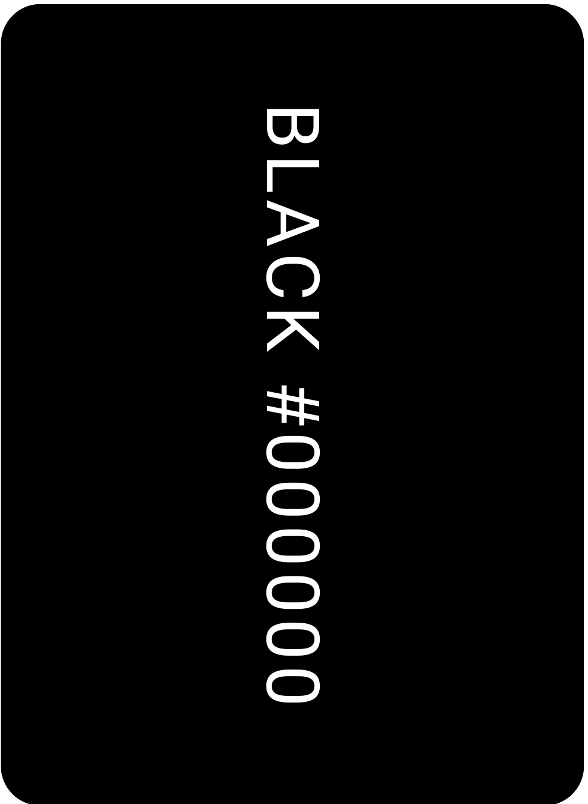
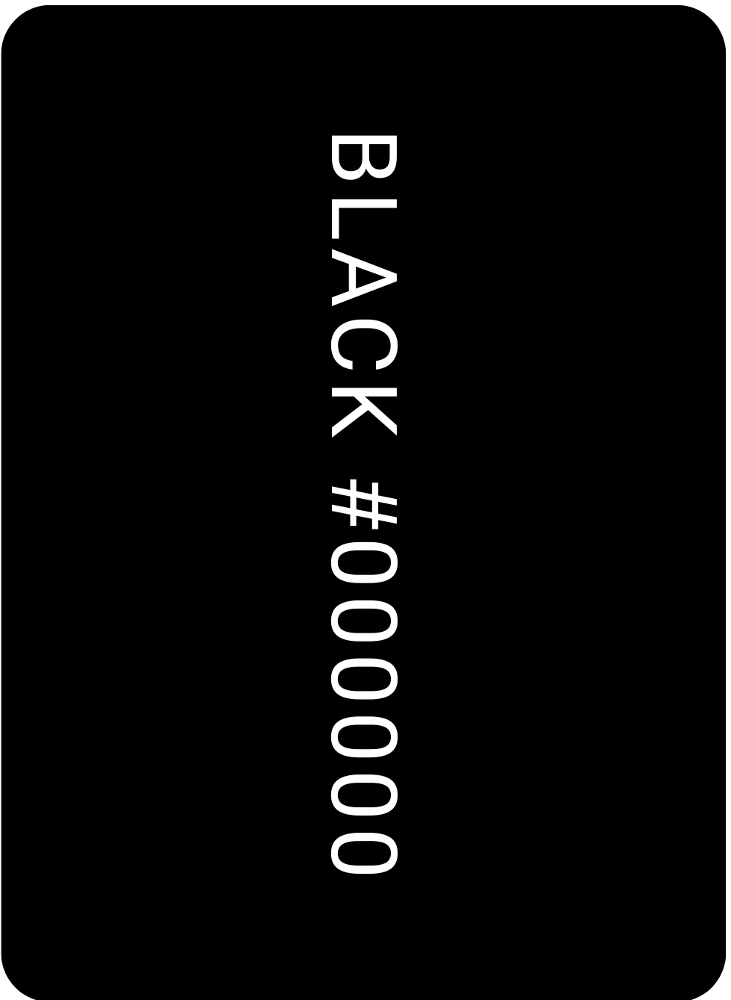

Eat Locally!
By: Siddhesh Mishra, Shriman Vinayagamoorthy and Amanda Marsillo
The Problem
After a gruesome shutdown period, local restaurants are finally opening again. This means, they now need a way to attract customers in order to stay in business. Due to the pandemic, people had to order food and the first places they would think of are big fast food chains or well known restaurants. How does one compete with that? How does an unknown local restaurant compete with these big fast food chains? This economy is ruthless towards local eateries, who should they turn to in these tough times? There are very few applications available that help promote local restaurants. A dedicated place where users can find a place to eat that fits their taste and has what they are looking for, all the while supporting a local business.
Research and Analysis
The Research
Local restaurants have existed for a very long time, but when you ask someone if they know
of any local restaurant, the person will most likely say no or name a restaurant like Boustan
which is a chain restaurant. The purpose of this research is to find a way to help local
restaurants get more customers and increase their profits to minimize the detrimental effects
of high inflation. In order to do this, we must start by looking at the different applications
available at the moment to the people and analyze their positives and negatives points.
It is also very important to understand people's mentality and see what makes a person want
to eat at a franchise restaurant over a local restaurant. What better way to do so then by
sending out a survey to the people and asking them ourselves.
In addition to this, it was reported a while back by Restaurants Canada that many restaurant owners have
had to watch their business fall apart as it was negatively affected by the Covid-19 pandemic. Many local restaurant owners
were thereby forced to close down eventually as their sales dropped drastically. With high inflations constantly making consumers rethink their
decision to dine-out, many local restaurant businesses see almost no light with regards to recovering themselves from this situation,
and so we should develop a product that would help not just the consumers, but also the local restaurant owners as well.
Before all this, let's define a few terms so there is no confusion!
What is a local restaurant?
During an interview with Damian Saktura,
I asked him what he considered as a local restaurant,
the answer surprised us! He said: “A restaurant that
is within walking distance from me”. That is when we realized, it's a confusion
many people may have so here is our definition of a local restaurant:
A restaurant that is owned by a person or family and managed by them.
We will be using this definition about local restaurants from here on.
What is currently available?
There are many different applications available on the market that
allow users to browse restaurants and choose where to eat or order food from.
Some of the popular existing apps are Zagat, Foursquare, Eat24, Ubereats,
Skip the Dishes and many others. These are great apps for an everyday user who
is just looking for a restaurant to eat at. These apps have features like delivery services,
some will tell you the wait time, they also give you options to pick-up directly at the restaurant.
These restaurant apps however have some faults such as not having any way to filter and find local
restaurants specifically. All these apps promote mostly the big franchise restaurants but they
neglect having a dedicated section to encourage local restaurants only.
Furthermore, almost no applications allow local restaurant owners to promote their restaurant themselves. Often, consumers google
for "good restaurants near me" and the odds of local restaurants making the top 5 first searches are very rare and this given is if they are just as
good as the big franchise restaurants.
Survey
In order to have a good understanding of the different types of potential users,
we made a survey to collect as much information as possible from users of all
ages with respect to what matters to them in the decision making process of going to a local
restaurant. Take the survey!!
Question 1:
We ask this question to get an idea of our target audience, as well as being able to see a trend in their answers based on their background.
We can observe that most of our audience are students.
Question 2:
We want to know what age range the person is in to understand the need for eating out at that age and to attract users of the majority age.
We observe that most of our participants in the survey are around the age of 18-25.
Question 3:
This is to help focus on the needs of our participants, to choose the most valuable
filters to bring effective use of our application.
We can observe that the most popular features are Price and discounts, Menu Items, and Restaurant atmosphere.
Question 4:
To keep a consistent client base we want to know what attracts the user to want to come back to a restaurant.
This will help us to incorporate the most popular needs in our application ensuring a sustainable formula to
keep the restaurant's client base.
We can observe that what motivates a user to go back to a specific restaurant is Quality of food, Price/discounts, and service quality.
Question 5:
We would like to get a general idea of how many times our participants eat out to be able
to gage our engagement on our application.
We can observe that the majority of our participants go out to eat once or twice per week.
Question 6:
To convince our users to eat at local restaurants we would like to know why they would
choose a local restaurant over a franchise restaurant so we know what pressure points
to include in our ads and our application design elements.
We can observe that the most popular answers were the variety of types of cuisine, better quality of food and prime location.
Question 7:
This question was a pure marketing question wanting our participants indirect opinion on the main color for our application.
Essentially it is our decision however we think it is a smart way to involve our client base and tapping into their
subconscious on what color they associate with food most. This will most likely attract them to use our platform to
choose their next restaurant outing.
We can see that the most popular answer was the color Orange which aligns with our initial design colors so this has validated that orange would be part of our color palette.
Question 8:
Asking this question was to collect data for our selection of filters to motivate our users
to try new restaurants putting our local restaurant into the spotlight.
We can see that the most popular answers were Menu, reviews, and location.
Question 9:
Now in this question we specifically ask them the filters they would like to have on our website.
With this we will condense the amount of filters by keeping the most popular ones so that our application
is not too overwhelming with choices.
With this we can observe that the most popular ones are, type of Cuisine, distance/location, Ratings
Personas
Based on the survey results, we were able to define 2 user personas that were highly representative of our research.
Selenea Marsil
Persona card:

Damian Abbot
Persona card:

We have chosen two types of personas one being a client and one being a restaurant owner to explore all user types for our application. Our first persona is Selena Marcil is a university student who enjoys eating out. She enjoys trying different restaurants and cultured food but finds it hard to find quality restaurants nearby. Our second persona is Damien Abbot, he is a local restaurant owner that is trying to gain more visibility. He is constantly looking for ways to increase his clientele and attract more customers to come eat at his restaurant. These two personas were analyzed to help us provide the best service to our users when using our application taking into consideration their needs.
User Goals
What does the user expect from this app: Using the results obtained from the survey along with the user personas, we were able to define the potential challenges and limitations a user can encounter along with the expectations they might have from our application.Using the surveys, we were able to determine the appropriate type of users for our applications, which in return allowed us to better define (and redefine) the goals that were set for this application.
The goals we were able to identify is, satisfying the users food craving by prompting them with the correct filters to help guide them to the perfect local restaurant pertaining to their current need. The user would like for it to be easy and non overwhelming with the most effective filters to help their selection process be quick and simple.
User Journey
A map of how the user thinks in order to choose a restaurant to eat at: In order to determine more realistically how a user feels, along with the thought process with respect to using the designed application, we appealed to one of our user personas, Selena Marsil, who was simply looking for a local restaurant near her. Furthermore, we illustrated the storyboard shown below in order to give a better idea of the user's experience and interactions we had in mind with the Feed Me Local Application.


Storyboard
The goal of the storyboard for this project was to show, in a story telling way, a user's interation with the application. As this is a part of the human centered design, we are able to see the type of emotions a user may feel while using the app. This brings the app to life by adding a human face to it.
The Solution
Our solution to this problem is a dedicated application with only local restaurants as an option. The user experience is also very important for us, this is why we want to make our application as simple as it can be so users of any age group should be able to use it without having to break their heads(i.e., make the application accessible and inclusive for the widest possible number of users). We also intend to provide an optional authentication functionality for the users who want to save their search history so they can find the restaurants they have previously visited with just 1 press of a button. Of course users who do not wish to authenticate can also use the application. The authentication is also there for new business owners who seek to add their business to the application in order to promote themselves. They can authenticate as an owner and send a request that will be reviewed by a team and added to the application. The local restaurant owners can provide the name of their restaurant, promote the dishes they think would favor their promotion, and even provide pictures of their restaurant and menu items. The application will have a search for restaurants with different filter options such as: Cuisine, wait time, rating, pick up, dine-in, location. With these filters, the users will get a selection of restaurants they can choose from. A great solution with this design, is that a restaurant owner can also use the application as a hungry user!
Sketches
The sketches for this application illustrate the initial idea we had in mind. In our sketches we decided early on in our design that we opted for a platform that did not need a user to sign in, the application can be used without having to sign in and putting in personal information. The user however does have some functionalities that can only be used if they do sign in as a “hungry user” such as favoriting certain restaurants or rating the restaurant after their experience. We did create a sign in/ create an account for the restaurant owners to add their restaurants to the application platform if they wish to be a part of the Feed me Local community and gain visibility on our application.
Wireframes and User Flow
Using our sketches, we were able to design wireframes and define a typical user flow in order to better represent the layout of our application and to provide the user an application that guarantees a positive user experience and interaction.


Color Palette
Here is our initial color palette, we initially decided to go with dark green as an inspiration from Uber as well as adding a light blue intended for the text, however soon realized that this was not strategic. The initial color palette was not user friendly nor did it link well with the purpose of our application. In that case, we decided to change it to the most popular color associated to food according to our survey.


We soon realized that those colors would not work properly so here is the fianl color palette we decided to go for:


 

Keeping one color that pops, helps the user to focus on what is essential in the application and is less distracting. Black and white are common colors, formally known as placeholder neutral colors and are used to enhance the visibility of cartoon images as well as writing, to contrast against the orange background.
Typography
Comforta Light
Work Sans
Lexend Exa
We have chosen these fonts since they are the most neutral and aesthetic fonts that fit with the design of our application. It is not too bold and intense, and they are not too thin that someone would have a trouble reading, they are the perfect inbetween. The fonts are simple to make sure the emphasis is on the restaurants and their images to attract the user to their restaurant. The fonts also give a more inviting/ welcoming feeling, linking it more to the theme of encouraging people to go to local restaurants.
Name and Logo
The name of our application is “Feed me Local”,
as it directly conveys the purposes this application intends on fulfilling,
which is to provide a dedicated place where users can find a place to eat that
fits their taste and has what they are looking for, all the while supporting a
local business. Moreover, the name of the application is quite easy to remember,
as it appeals to the two major words used by humans in most of their lives “Feed” and “Me”,
and so naming the application using these two words will overtime create a mental connection
the user can associate with. Furthermore, we used a little slogan under the word “Local”,
which is “to satisfy our food cravings”, and this is because we often find ourselves craving
for things to eat at random times when we are home. Hence, the user will be more encouraged
to search for local restaurants, through our application, whenever they feel a craving.
We designed a simple logo that uses the Orange, white, black and dark beige
color palettes.The words “Feed Me” and “Local” are separated by an outline of a rooftop,
and this is to emphasize on the idea of feeling making them feeling comfortable by appealing
to the idea of home, along with their desire to find food to address their hunger,
through the words “Feed Me”.
Mock Up
Once we had finalized the color palette and the font styles, we were ready to make our mock up on Figma. We wanted to create an inviting feeling for the user once they open the app. The logo splash screen is meant to make them smile and put them in a mood to try something new. We wanted our mockup to simulate what our application would look like to the user. By seeing the mockup we can ensure the flow of our application is logical and organized in a way that does not overwhelm the user. So with the mockup we were able to move some features around and to make the experience of using our application more logical and pleasurable.
Prototype
Prototying is the final step in the interactive design proecess.
This is where we use the mock up that we made and make them interactive
to simulate user interaction. Clickable buttons allow the user to see what different
buttons on the app will do. For example, if a user clicks on "Join the local community",
they will be brought to the registration page where they have the option to login or create a new
account.
Small interaction like this is what makes a prototype interesting and what will later help the developers make
replica based on it.
In our prototype, the user is able to go through many different process which allows different types of users to see
what the others can see. Let's say you are a restaurant owner, well you get to see what a regular user is able to see,
as well as what someone who decided now to login can see.
Conclusion
Creating the “Feed Me Local” application allowed us to gain more knowledge and a better understanding of the UX and UI design processes. We learned that the design of an application should directly make reference to a target users' needs and that their needs is what will allow us to define and distinguish the more important features over the less important ones